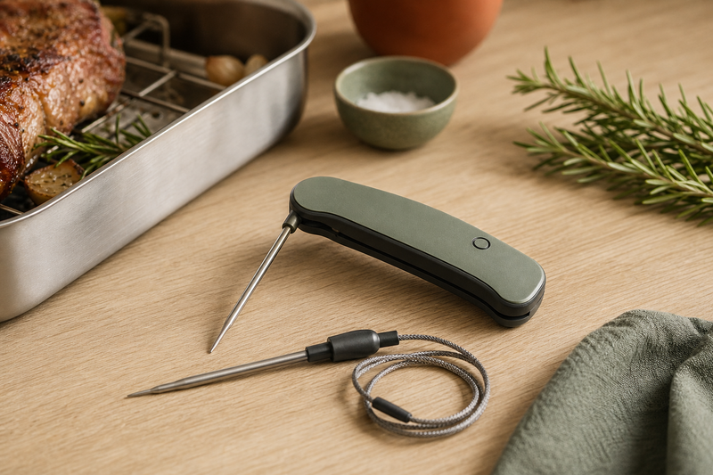

As an Amazon Associate I earn from qualifying purchases. This site contains sponsored product links. Prices and availability are shown on Amazon — check Amazon for current details. Full disclosure
Guide · Thermometers · Season: Holiday cooking
Where exactly do you put the probe in a chicken?
The USDA names three places to check a whole bird and one thing to avoid. Here is the placement map, and what it means for the two thermometers in this shop.
By the ShopNow Kitchen Desk · Published 2026-11-20 · Updated 2026-11-20 · 3 min read · This category · Sources

Editorial illustration. Not a product photograph.
A thermometer can be accurate and still mislead you: the USDA's food thermometer factsheet states that the reading is only correct if the probe sits in the right part of the food. For a whole bird it names the places — and the one thing to stay away from — in plain words. This page turns that guidance into a placement map you can use at the oven door, then connects it to the two thermometers in this shop.
The USDA placement map for whole poultry
Verbatim from the factsheet: “When cooking whole poultry, check the internal temperature in three places: the innermost part of the thigh, the innermost part of the wing and the thickest part of the breast. Avoid the bone.”
Placement and stuffing wording quoted from the USDA FSIS “Food Thermometers” factsheet; the 165 °F minimum from the FSIS safe-temperature chart. Both fetched and read on 2026-11-20.
What this means for the two thermometers in this shop
Situation
What the listing says
Source
Checking the three places quickly
An instant-read suits the three-point check: the ThermoMaven listing states a 1-second read and a fold-out probe, so you can move between thigh, wing and breast without holding the oven door open.
The CHEF iQ Sense listing states three ultra-thin probes and a wireless hub, so separate probes can sit in breast and thigh at the same time. Its stated 1000 °F heat-safe figure is the seller's own claim — read it on the listing.
The USDA says to follow the manufacturer's instructions for how deep the probe must sit; the wireless category in the USDA's own table is “designed to remain in the food while it is cooking” at least 1 inch deep in the thickest part.
Product behaviour is described only by what each listing states (B0DHZTCNR5, B0DZFD6R9Z, read 2026-11-20); placement and care guidance is the USDA's. Accuracy figures, heat limits and probe counts are seller claims, not measurements taken here.
The decision shortcut. If you check a bird once or twice a season, the three-point check with an instant-read is the USDA's own method and needs no app. If you monitor long cooks without opening the door, that is the case the wireless unit was designed for — and the placement rules do not change.
The probe you hold and check at the end of the cook. Its listing title claims a one-second reading, ±0.5°F accuracy and IP67 waterproofing — we quote those claims, we have not measured them, and the accuracy claim is the one worth testing at home.
The probe you leave in. Three ultra-thin probes wire to a hub that reports over WiFi, and the listing says the probes are heat-safe to 1000°F — that combination is what lets you walk away and still know when to stop.
Capacity: 3 probes + hub
Size: 8.43 x 4.69 x 1.93 inches (package); 14.07 ounces
How this page was made. Written from published listings and official guidance, by an editorial desk — not from hands-on use, so no page here claims testing. Every table row links to its source; anything we could not confirm is left blank and listed on Flagged for review. Sponsored links are marked Sponsored.
Get the next comparison — checklist first, hype never.
One email when a new guide publishes.
There is no newsletter running yet, so this control is switched off on purpose: it transmits nothing, stores your address nowhere, and cannot submit a form. A subscription flow needs a provider, a consent record and a retention period first — those are open questions on the questions page, and the disclosure states exactly what this site does and does not collect.